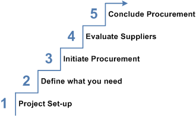

1.2 - Describing methods, skills and resources needed to complete digital projects successfully
1.3 - Plan and carry out tasks using IT
Having used Trello to plan previous projects, I found that planning my tasks using the Kanban method via Trello really gives me a clear and concise direction, focusing on what still needs to be done aswell as knowing what is currently in progress. If I was working with a team, Trello would allow me to assign tasks to individuals and label tasks accordingly. How I intended to plan this project was by splitting the tasks in areas of work - HTML; CSS; Unit 1; Unit 2; Image sourcing etc.
Trello
1.4 - Describe the risks that might impact digital projects
Digital projects have their benefits, but there are several risks involved with working digitally. One risk that can cause a project to fail is a lack of leadership; when working digitally, one person is required to take control, this person needs to be holding their peers accountable because if every member of the team isn't invested or doesnt feel supported, cracks start to form; a weakened structure will always fail. A second possible risk of digital projects is the lack of planning/the introduction of a timeline. This is severly important and plays hand in hand with the resources used within a digital projcet. With a lack of direction, teams work off the path of the project, they essentially work ineffectively as 2 members could begin working on the same task without knowing and a more important task is left untouched. [4]
1.5 - Describe how you would go about selecting and using IT systems and software
When considering the selection and uses of IT systems/software for a digital project, you must consider the impact on usability, interoperability, support costs and the ability to migrate materials over time. Making intelligent selections calls for an assessment of internal needs and resources, if the user and/or client have made specific requests, an assessment should be made of what options are available in relation to IT Systems and software that will have the greatest outcome.
The infographic below suggests an order of consideration made towards selecting IT Systems and Software for a project. In the case of a project, it can be suggested that you think about A) The purpose: do you have a viable and worthwhile project? If so, establish a project management framework as well as an outline plan. Then you must think about B) The tasks at hand: you should prepare an initial business case for the project followed by identifying risks and issues, this will help when considering the IT Systems and software selection. Once this has been done, a project team must be appointed and an inital plan should be developed. What must finally be thought about are C) The deliverables: from parts A and B, you should be providing the client/user with the business case, a project charter, a project initiation document and the project plan.

[5]
1.6 - Describe and provide analysis on how your chosen technologies have helped you achieve your outcomes
Trello is a free application empowering the tracking of tasks through stages, collaborative task lists and the ability to make comments and share content, such as screenshots and files. Trello is used by creating lists to categorise individual tasks, these tasks are labelled as 'cards' and can hold a huge amount of information including files, links, screenshots, checklists, and messages from your collaborators.[6]
GitHub is an platform which allows users to host their code and digital projects, along with ongoing multiple amendments which Github will automatically identify and change accordingly, meaning the most current version is always accessible. Each time an upload is made, GitHub prompts the user to add a commit message so anyone who sees the project can see when the changes have been made. [7]
1.7 - Describe legal guidelines and constraints that impact digital projects
GDPR was introduced as a way to be more transparent about the way companies collect and use data, it changed the landscape of privacy. The new rules were enforced after 23 years of lessons learned, it added new definitions and requirements to reflect the changes in technology which simply did not exist in the dialup era. There are 2 particular areas of data at the forefront, personal and sensitive data; personal data is any information relating to an identified or identifiable natural person. Sensitive data relates to Racial or ethnic origin, political opinions, religious or philosophical beliefs, trade union membership, health data, sex life or sexual orientation and past or spent criminal convictions. GDPR then expanded the definition of personal data to include genetic data,biometric data (such as facial recognition or fingerprint logins), location data, pseudonymized data and online identifiers.[8] This is likely to impact Digital Marketing more than any other field withing the digital sector as the obtainability of data and information has now become more difficult.